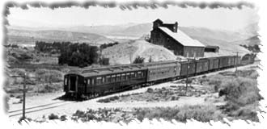

To me, scenery is as important as the motive power, rolling stock, and rails as a part of a model railroad. The basic techniques are not hard, can be mastered by most everyone, and bring a model railroad to life.When I was first starting out in the hobby after a 30 year hiatus, I needed to get reacquainted with the way things were currently being done. In the 1960s, scenery was built up over 1/4" square metal mesh or 'chicken wire'. Since that time, the 'hardshell' techniques have become the favorite. Variations using built-up layers of foam with cast foam rocks have provided a lighter weight alternative. Whatever the basic technique used, the results are what count.
My reacquaintance started at the local hobby shop. There are a number of great books on scenery techniques, and my present techniques came from many of them. Of all these, the most important one for me was "Track Planning for Realistic Operation", by John Armstrong. Second in importance was "Scenery for Model Railroads" by Bill McClanahan. There is a full listing of the books later on the page.
John's book is most important because you need to plan the layout before you add the scenery. Operating a model railroad is dependent upon industries shipping goods and receiving supplies. Without a reason for 'being', you have little more than a display loop or diorama. This is ok too, if that is your intent, but preplanning the way your model railroad will behave is the first basic step. Making sure you can reach all areas of the layout for maintenance is very important (the least accessible spot is the most in need of maintenance :o} ). Make sure all access hatches and aisles are in place before starting the mountains.
Bill's book was written in 1958, and has been revised and reissued at intervals up to the present. Yes, the 'chicken wire' style of scenery is there, and the 'hardshell' scenery has been added to newer reprints. What I found most important in his book is the same sort of preplanning for the scenery that John's book does for the track layout. The roads and hills also need a reason for 'being', and need to tie logically into the adjoining areas.
I wrote up an article in 1991 (for myself mostly) on a need for accuracy in scenery modeling. It is more philosophical than nuts and bolts, but you might enjoy it. Check out Scale Model Scenery.
Once the preplanning is fairly well along, and the benchwork and trackwork is mostly in place, the next step is the basic shell. I have found that the use of 'Hydrocal' (a USG plaster type) creates a very strong structure on its own, and the initial support structure can be taken out once the shell is set up. I use 1 inch wide strips of cardboard, cut along the corrugations, for the rough frame. Following many book examples, I make the frame in a basic horizontal and vetical pattern, with variations to suit the terrain. I get all the rough shapes in to be able to step back and view the overall effects.
I use a staple gun to attach the ends to the layout frame and a glue gun to connect them at their crossing points. Except for the pesky 'spider webs' the glue gun creates, this is a fast process. If you need to keep away from the walls, you may need to add some wood risers to attach the scenery to. I put the strips at roughly 6 inch intervals, and do not weave them together. I bend them to make the basic shapes as I am installing them so the strips that attach hold the shapes together.
Next, I cover the framework with damp newspapers, full size. This does two things; it shows better how the scenery will look, and it keeps the plaster from getting all over the floor (mostly). This also allows you to remove all of the cardboard if you want to after the shell is set.
A layer of strips of newspaper dipped in a soupy plaster mix are the first of the shell. The newspaper is ripped to about 4-6 inches by 10-12 inches in size. Ripping rather than cutting means fewer hard edges sticking up in the shell. The soupy plaster mix is made by starting with about a cup of water in a 9 inch by 12 inch glass baking dish, and adding plaster while stirring until the mix is the consistency of buttermilk or clam chowder. Don't make more that you can use before it starts to set up. Dip the strips in, and apply to the wet newspapers, in somewhat random patterns, overlapping by at least 50%. More layers is better, but don't overload the framework or it will sag. As the plaster in the dish starts to set, use it to smooth or fill in areas. Let it all dry.
This thin layer will hold up on its own as temporary scenery, but more is needed for a permanent shell. At this stage, the scenery shapes should be apparent and you can correct it easily by tearing out what you don't like and rebuilding it. Check for clearances where you are near the track, and make sure there is room for a thicker final coating. Use a spray bottle to wet the surface of any areas you work in from now on. A second layer of plaster/newspaper over the first may be all you need for rolling hills. Use cloth strips if more strength is needed. Finish off the hills with a plaster coating mixed to the consistency of sour cream, smoothing by hand as it starts to set. A quarter inch layer is plenty. Put a light inside the form to check for thin spots.
For other types of scenery, use the sour cream mix or even a little thicker, and shape the landforms you want. As this sets up, you can scrape, pick, poke, and squeeze the plaster all you want. You can create great rock faces this way.
Where you want to use rock castings, put on a thin layer of plaster, and then apply the casting. Hold it in place until it starts to set up. Leave the mold on until it starts to feel warm, then pull it off. John Olson has a good description of rock mold castings in his book.
I prefer not to precolor the plaster, but you may want to. It hides 'chips' that would show up as a bright white. I prefer to know where the 'chips' are occurring and to fix any problems. I also use a wire brush after coloring is finished to accent rock faces or highlight some areas.
For basic coloring, I use thinned down flat latex house paint and brush or airbrush it on. Check paint stores for returned 'wrong colors' to get a bargain. Throw on some colored grout and you have basic bare mountains. Washes of darker colors will accent the landforms, and dry brushing on lighter colors adds accents.
Add ground foam for grassy textures, and coarse foam for low shrubs. For larger shrubs, I cover lichen clumps with more ground foam. All sorts of techniques will work, so check out a bunch of books for good tips. Stay away from bright colors, even if doing an autumn scene in New England. A wash or spraying of a light blue-gray over everything will help kill overly bright scenes. You want the scenery to act as a backdrop, not be the focal point of the scene.
Some great books on scenery techniques. There may be newer reissues than the ones I have.
- "Track Planning for Realistic Operation", by John Armstrong
Kalmbach Books, 1963-1986, ISBN # 0-89024-504-5
- "Scenery for Model Railroads" by Bill McClanahan
Kalmbach Books, 1958-1986, ISBN # 0-89024-508-8
- "How To Build Realistic Model Railroad Scenery" by Dave Frary
Kalmbach Books, 1982-1988, ISBN # 0-89024-508-8
- "HO Narrow Gauge Railroad You Can Build" by Malcolm Furlow
Kalmbach Books, 1984-1989, ISBN # 0-89024-058-2
- "Building an HO Model Railroad With Personality" by John Olson
Kalmbach Books, 1983-1987, ISBN # 0-89024-0428-6
If you have comments, suggestions on what you would like to see
or data you might like, you can email me at:
Rick Blanchard - rick@urbaneagle.com


--Back to da data.--